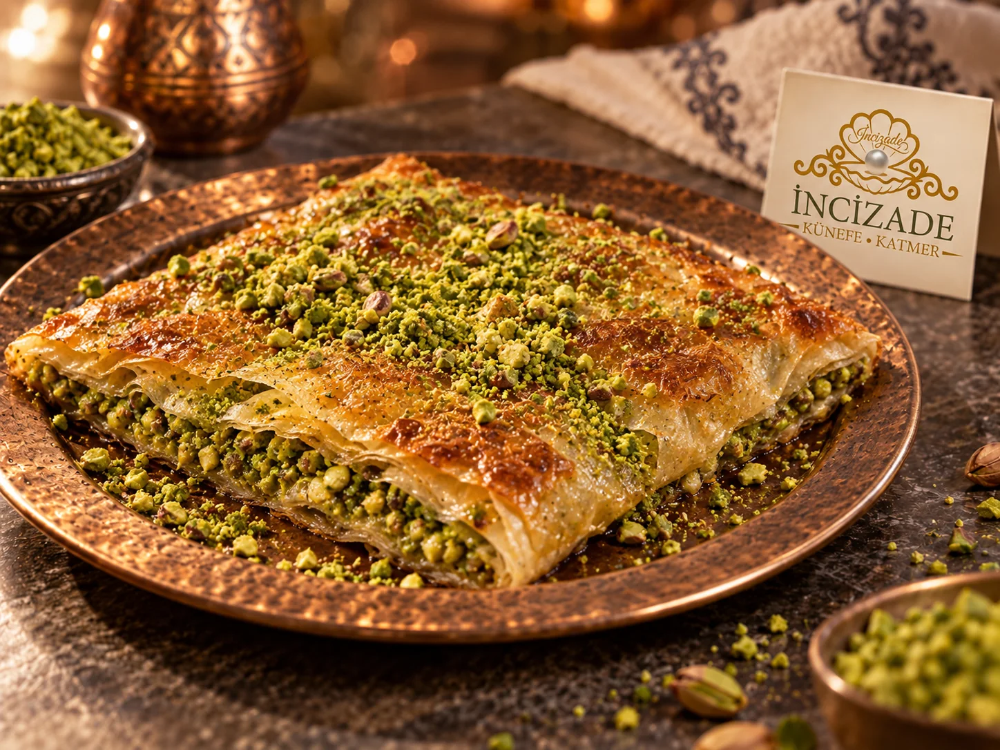

Paylaşmanın tadıBüyük
Büyük
Katmer
Sofranın ortasına gelen, paylaştıkça çoğalan katmer keyfi.
İncecik katların bir araya geldiği büyük katmer, kızarmış yüzeyiyle sofranın en davetkâr köşesine yerleşir. Her parçasında çıtır dokunun ve tatlı lezzetin uyumu hissedilir.
Bir parça size, bir parça sevdiklerinize… Büyük katmer, çayların tazelendiği, sohbetin uzadığı sofralarda paylaşmanın tadını hatırlatır.
Ürün hakkında bilgi al